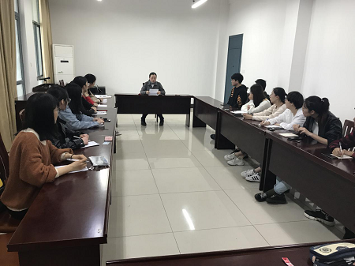

理学院组织召开毕业班党员会议
录入员： 理学院 浏览次数： 122 发布日期： 2019-04-11
4月9日下午，理学院召开毕业班党员会议，回顾总结上一阶段的工作，部署毕业期间的工作任务。会议由毕业年级辅导员何佳主持，院党委副书记、副院长侯蔚出席会议。
侯书记首先带领全体党员学习了《习近平在中央党校（国家行政学院）中青年干部培训班上发表重要讲话》，要求15级全体党员要“在常学常新中加强理论修养，在真学真信中坚定理想信念，在学思践悟中牢记初心使命，在细照笃行中不断修炼自我，在知行合一中主动担当作为”，向15级全体党员作出了几个方面的具体要求：一要做到不断增强党性，坚定政治立场，强化政治意识；二在学习理论上，要舍得花精力，全面系统学，及时跟进学，深入思考学，联系实际学；三要有远大理想和崇高追求；四要不忘初心，砥砺前行。随后，侯书记就具体工作进行了部署，要求全体党员要将学生安全工作放在重要位置，做好班主任、辅导员的助手，确保15级全体毕业生的学习、生活稳定有序；敦促全体党员要认真学习习近平新时期中国特色社会主义思想，做全体学生思想的引领者、带头人，积极弘扬正能量；要关心班级同学的学习与就业问题，积极帮助学业、就业困难生共同进步。
理学院党委始终把党建工作当作学院工作中的一件大事来抓，注重党的后备人才储备和培养，每年都将党校工作纳入年度工作要点，定期举办各类培训班，邀请校内外专家和校关工委老同志来院授课，同时采取自学、课堂研讨、观影、实践活动等多种形式丰富的培训手段增强培训实效。(何佳）。
